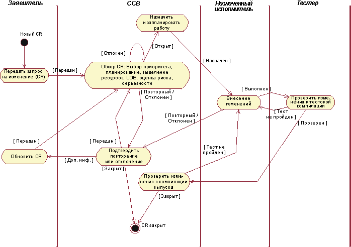
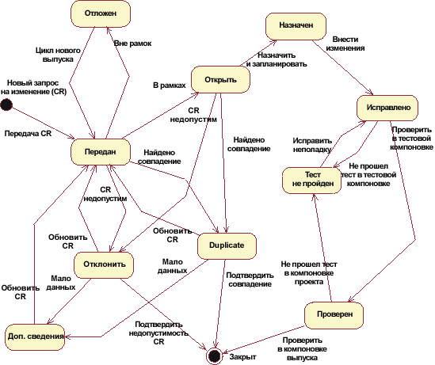

|
Стандартная процедура управления
запросами изменений проиллюстрирована на следующей диаграмме. (Для того чтобы перейти к подробному описанию Концепции: Управление запросами изменений, щелкните мышью в любой части диаграммы.)

Форма Запрос изменения - это артефакт, который оформляется официально и содержит все запросы (включая запросы
расширений, запросы, касающиеся новых функций, неисправностей, измененных требований и т.д.). Этот документ должен
отражать информацию о состоянии на протяжении всего проекта. Для каждого запроса изменения поддерживается хронология
изменений, отражающая все изменения состояния с датами и причинами изменений. Эта информация используется при повторных
проверках и на завершающей стадии. Пример формы Запрос изменения приведен в разделе Рабочий
продукт: Запросы изменений.
Возможные состояния запроса изменения проиллюстрированы на следующей диаграмме состояний. (Для того чтобы перейти к
подробному описанию Концепции:
Управление запросами изменений, щелкните мышью в любой части диаграммы.)

После подачи запроса изменения специалисты из технических и руководящих групп анализируют его на предмет
обоснованности. Запросы изменений необходимо рассматривать на нескольких уровнях группы разработки. Руководитель группы
часто проверяет и утверждает запросы изменений, поданные участниками его группы. Однако если специфика изменения
выходит за рамки деятельности группы разработки, оно передается для проведения проверки следующего уровня. Если
изменение затрагивает несколько групп разработки, оно рассматривается комитетом контроля за изменениями. В Rational
Unified Process роль комитета контроля за изменениями выполняет администратор управления изменениями.
Иногда сбои системы, указанные в запросах, скорее связаны с использованием системы, чем с ее реализацией. Иногда также
поступает повторная информация об одних и тех же сбоях, работа над которыми уже ведется.
Результатом этапа анализа может быть либо принятие запроса изменения, либо отказ в его принятии на основании его
необоснованности, повторности или в виду того, что его специфика не входит в рамки текущего видения или мандата
проекта.
Если изменение обосновано, следующим шагом нужно оценить его стоимость с учетом его влияния на систему в целом и
простоты его реализации.
Результат оценки предоставляется на рассмотрение комитета CCB. Комитет CCB рассматривает запрос изменения и его влияние
со стратегической, организационной и технической точек зрения. CCB решает, обоснован ли запрос изменения с
экономической точки зрения.
После одобрения запроса изменения его можно реализовывать в программном обеспечении. Затем необходимо провести проверки
качества исправленного программного обеспечения и убедиться, что изменения были внесены в соответствии с установленными
принципами проекта и не влияют отрицательно на другие части продукта.
После внесения изменений обновленное программное обеспечение проходит тестовую компиляцию, а затем объединяется с
другими компонентами и проверяется в тестовом выпуске всего продукта.
После обновления программного обеспечения необходимо сделать запись обо всех изменениях.
Рекомендуется вести хронологию изменений в начале описания компонента вместе с данными о запросах изменений.
Ниже приведен пример оформления данных об изменениях в начале описания компонента:
Хронология изменений
Версия Исполнитель Дата Изменение Причина
1.1 Брюс Богтроттер 01.05.98 Диапазон тестирования Причина #232
1.2 Мария Муссолини 02.06.98 Требования Причина #454
|